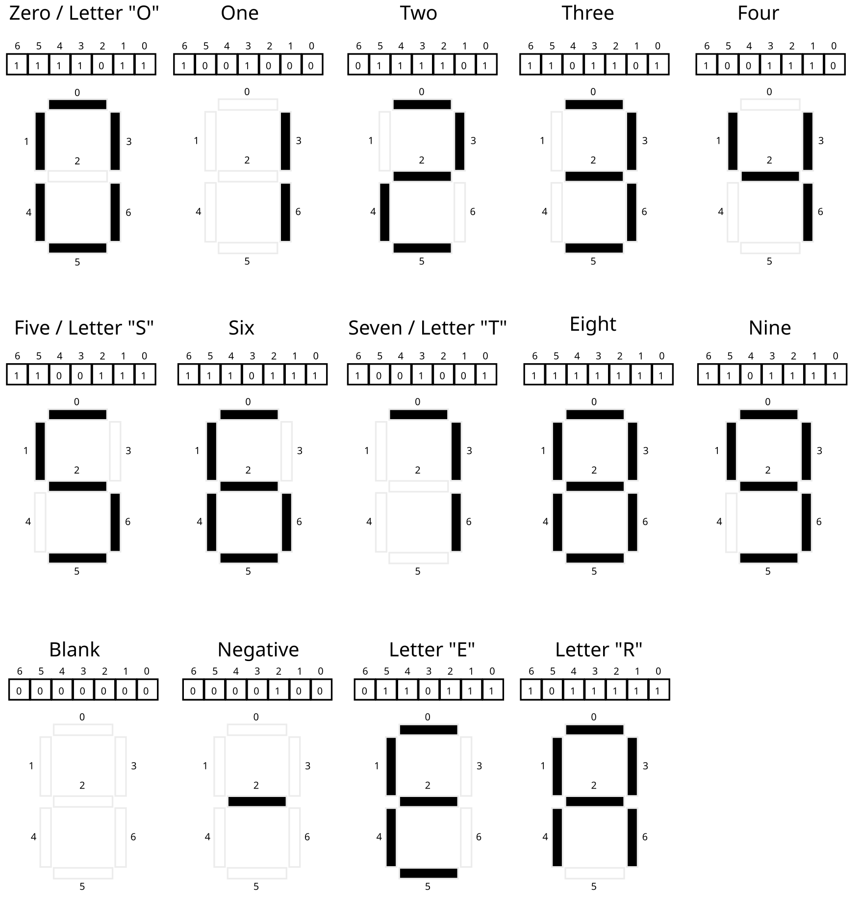
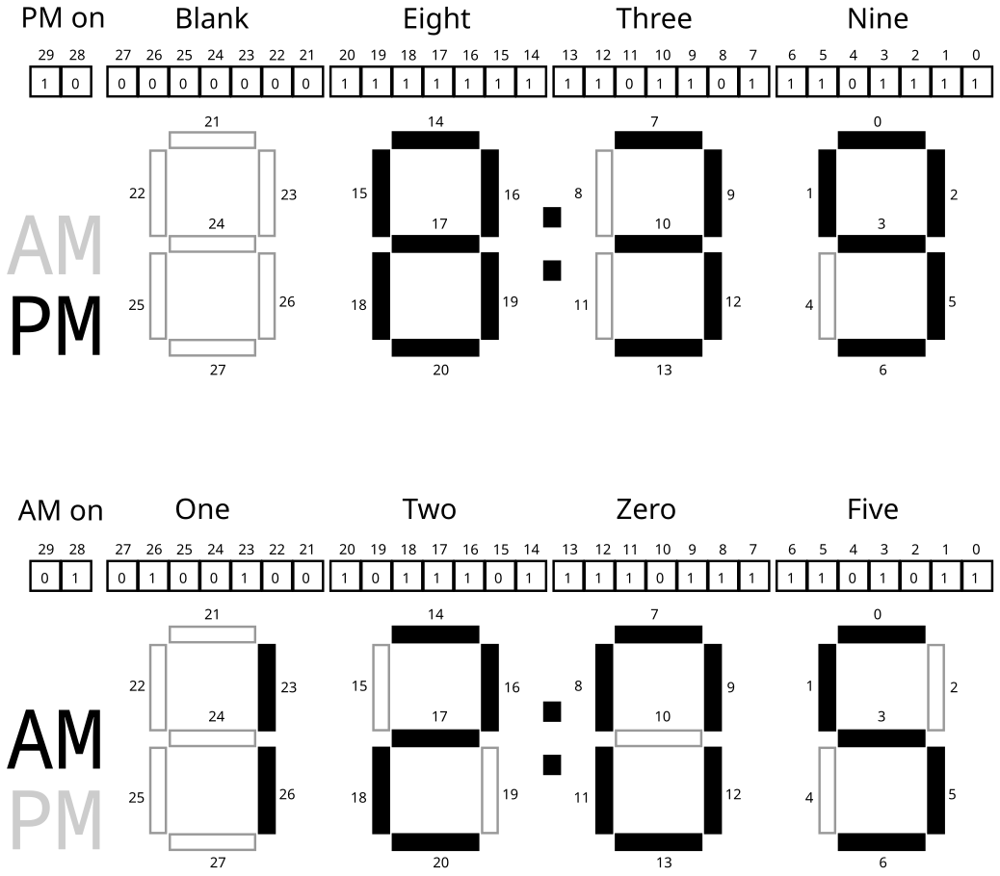
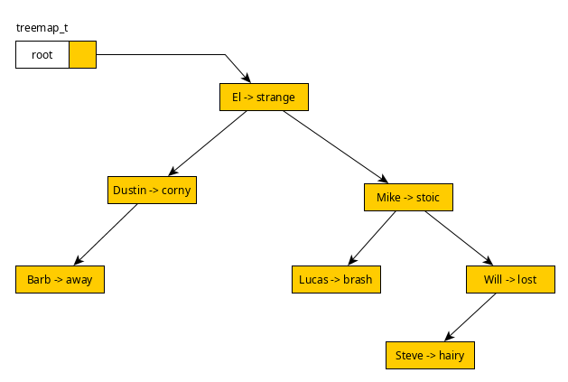

CMSC216 Project 2: Bit Ops, Debugging, Data Structures
- Due: 11:59pm Fri 09-Oct-2026
- Approximately 4.0% of total grade
- Submit to Gradescope
- Projects are individual work: no collaboration with other students is allowed. Seek help from course staff if you get stuck for too long.
CODE/TEST DISTRIBUTION: p2-code.zip
VIDEO OVERVIEW: Not yet available
CHANGELOG: Empty
1 Introduction
This project addresses more advanced C programming topics each in its own problem.
- Bit-level operations are common in C and systems programming. This assignment features a problem in which shifting and bitwise AND/OR-ing are required to complete the requirements.
- Debugging is also a critical skill enabled by the debugger. The
second problem in the assignment makes use of the GNU Debugger,
gdb, to work through a puzzle program requiring specific inputs to pass its "phases". - Data structures pervade computing and getting some practice with them in C will improve one's skill at pointers and memory usage while also giving a great appreciation for garbage collected languages. A basic "map" application which maps keys to values is implemented that is backed by a binary search tree.
Difficulty Note
Past students have found this content to be more challenging than Project 1.
If you were pressed for time to finish Project 1, start this project as early as possible. Most students have found the first two problems (bit manipulations and debugging) only mildly challenging but run out of time on the larger third problem.
You have been warned.
2 Download Code and Setup
Download the code pack linked at the top of the page. Unzip this which will create a project folder. Create new files in this folder. Ultimately you will re-zip this folder to submit it.
| File | State | Notes |
|---|---|---|
clock_update.c |
CREATE | Create this file and write required function in it to complete Problem 1 |
clock.h |
Provided | Problem 1 header file |
clock_main.c |
Provided | Problem 1 main() function for clockmeter simulation |
clock_sim.c |
Provided | Problem 1 suppor functions to assist with simulating clock device |
test_clock_update.c |
Testing | Problem 1 function tests for clock_upate.c |
test_clock_update.org |
Testing | Problem 1 testing data file |
testy |
Testing | Problem 1 test running script |
clock_examples.sh |
Provided | Problem 1 script to produce a variety of clock examples |
puzzlebox.c |
Provided | Problem 2 Debugging problem |
input.txt |
EDIT | Problem 2 Input for puzzlebox, fill this in |
treemap_funcs.c |
CREATE | Problem 3 functions to write |
treemap_main.c |
CREATE | Problem 3 main function to write |
treemap.h |
Provided | Problem 3 header file |
data/tree-demo.script |
Data | Problem 3 sample input script to main program |
data/stranger.hm |
Data | Problem 3 sample tree map saved to file |
data/other.script |
Data | Problem 3 sample input script to main program |
data/other.hm |
Data | Problem 3 sample tree map saved to file |
data/big.script |
Data | Problem 3 sample input script to main program |
data/big.hm |
Data | Problem 3 sample tree map saved to file |
test_treemap.org |
Testing | Problem 3 tests |
WORK_DISCLOSURE.txt |
EDIT | Disclose collaborators and resources, assert work ownership |
Makefile |
Provided | Build file to compile all programs |
testy |
Testing | Test running script |
gradescope-submit |
Provided | Script to allow submission from the command line |
Makefile
As in the first assignment, a Makefile is provided as part of this
project. The essential targets pertinent to each problem are described
in those sections. The Makefile is equipped with a brief help
listing:
>> make help
Typical usage is:
> make # build all programs
> make clean # remove all compiled items
> make zip # create a zip file for submission
> make prob1 # built targets associated with problem 1
> make test # run all tests
> make test-prob2 # run test for problem 2
> make test-prob2 testnum=5 # run problem 2 test #5 only
> make update # download and install any updates to project files
> make submit # upload submission to Gradescope
Automated Tests
As in previous assignments, automated tests are provided and associated with problems. Each problem describes how to run tests associated with it. Generally this is done as before:
>> make test-prob1
gcc -Wall -Wno-comment -Werror -g -c clock_main.c
gcc -Wall -Wno-comment -Werror -g -c clock_update.c
...
./testy -o md test_clock_update.org
===========================================================================
== test_clock_update.org : Problem 1 test_clock_update and clock_main tests
== Running 40 / 40 tests
1) set_tod_from_ports check-initialized-set : ok
2) set_tod_from_ports midnight-set : ok
3) set_tod_from_ports after-midnight-set : ok
...
>> make test-prob2 # run "tests" associated with problem 2
...
>> ./puzzlebox input.txt # same as above: run puzzlebox to test answers
3 Problem 1: Digital Clock Simulation
3.1 Overview
You are tasked with writing code which will be run by a microcontroller in a digital clock. The hardware has the following relevant features.
- An internal clock that increments 16 time per second. The value reported by the clock is stored in a special hardware location that is presented as a global variable.
- A digital display with a control port; setting certain global variable will change the display to show information to a user of the clock.
- User code that you will need to write to update the display based on the value reported by the internal clock.
- A simulator program with
Makefileto test your code
Each feature is discussed in subsequent sections.
Time of Day Register
A special register is periodically updated to contain an integer that reflects how much time has passed since the beginning of the day. This special hardware location is accessible in C programs via a global variable:
extern int CLOCK_TIME_PORT;
// Time of day in units of 1/16th of a second. Tied to a hardware
// clock that automatically increments it 16 times per second starting
// at midnight. The simulatator provides a C global variable to
// emulate this part of the hardware. This variable is present when
// #include "clock.h" is used and should not be declared in any user
// code.
You do not need to define this variable as it is already there. You do not need to set this variable as it is automatically changed by the hardware. Instead, you will need to access its value to determine various aspects of the current time relevant to display.
- Calculate the total number of seconds since midnight and round this up if 8/16th or more of a second has passed. This can be done using bit shift and mask operations due to the power of 2 involved.
- Whether it is AM or PM (AM is hours 12midnight to 11:59am, PM if 12noon to 11:59pm)
- The hour of the day (12-hour format so this is 1-12)
- The ones and tens digits in the hour (blank or 1 for tens, 0-9 for ones)
- The time in minutes (0-59)
- The ones and tens digits in the minutes (0-5 for tens, 0-9 for ones)
Clock Display Port Register
A special register controls the display of the LCD clock. This register is accessible in C programs via a global variable.
extern int CLOCK_DISPLAY_PORT;
// Global variable used to control the LCD display on the
// clock. Making changes to this variable will change the clock
// time. Type ensures 32 bits.
Your code can examine the current values of the register but this is not relevant to the present problem. More importantly you will need to set the bits of this variable to properly show the time.
3.2 Diagrams of Digits
The following diagram shows bit patterns for various digits and how
they will be displayed in the ones digit of the minutes place.
Digits are displayed by darkening certain bars in the display which
correspond to certain bits in the CLOCK_DISPLAY_PORT register being
set.

Figure 1: Bit to clock display bar correspondence for the ones digit of the minute. The 0th bit controls the upper horizontal bar, the 1th bit controls the horizontal bar counter-clockwise from it, and so on around the 6 outer bars in a counter-clockwise fashion. The 6th bit controls the middle horizontal bar. When a bit is 1 (set), the bar will be darkened while when the bit is 0 (clear) the bar will not be displayed (shown as empty). The combinations of bits shown are the only ones that arise when showing digits for times.
Notice the following.
- Bits that are set (equal to 1) will turn on (darken) one bar of the clock digit
- Bits that are clear (equal to 0) will turn off one bar of the digit
- 7 bits are required to control the display of one digit
- The bits are arranged with the low order bit (bit 0) at the top and
progress counter-clockwise around the digit.
- Bit 0 top
- Bit 1 upper left
- Bit 2 upper right
- Bit 3 middle
- Bit 4 lower left
- Bit 5 lower right
- Bit 6 bottom
- The programmer can set bits to any pattern which will be displayed but only patterns shown in the figure correspond to digits of interest.
3.3 Diagram of Time Display
Time is displayed with several adjacent digits along with an AM/PM
display. The diagram below shows two full times along with the bits
representing the digits. The bits correspond to how the global
variable CLOCK_DISPLAY_PORT should be set in order to make the clock
appear as it does.

Figure 2: Two full examples of how the 30 bits of the clock display state control which parts of the clock are shown. Each digit follows the same pattern of bit to bar correspondence as the right-most with bits. The lowest order (rightmost) bit controls the top bar of each digit and proceed around the outside counter-clockwise with the final bit for each digit controlling the middle bar. The highest order bits (28 and 29) control whether the "AM" or "PM" lights are shown. Note that both could be shown at the same time or neither shown but this should not be done for actual times.
Notice the following.
- You may presume that the
CLOCK_DISPLAY_PORTregister is a 32-bit integer. - 30 bits are used to control the full clock display.
- Bits 0-6 control the ones place of the minutes
- Bits 7-13 control the tens place of the minutes
- Bits 14-20 control the ones place of the hours
- Bits 21-27 control the tens place of the hours
- Bit 28 controls whether AM is displayed
- Bit 29 controls whether PM is displayed
- Bits 30 and 31 are not used and should always be 0.
3.4 clock_update.c: Updating the Display with User Code
Periodically the microcontroller will run code to adjust the LCD display for the clock to show the current time. This function is called:
clock_update()
and it will be your job to write this function.
Rather than write everything that needs to be done within
clock_update(), several helper functions will be used to divide this
task into several more manageable and testable chunks.
These should all be written in clock_update.c and are as follows.
Converting time of Day in Seconds to a Struct
int set_tod_from_ports(tod_t *tod);
// Reads the time of day from the CLOCK_TIME_PORT global variable. If
// the port's value is invalid (negative or larger than 16 times the
// number of seconds in a day) does nothing to tod and returns 1 to
// indicate an error. Otherwise, this function uses the port value to
// calculate the number of seconds from start of day (port value is
// 16*number of seconds from midnight). Rounds seconds up if there at
// least 8/16 have passed. Uses shifts and masks for this calculation
// to be efficient. Then uses division on the seconds since the
// begining of the day to calculate the time of day broken into hours,
// minutes, seconds, and sets the AM/PM designation with 1 for AM and
// 2 for PM. By the end, all fields of the `tod` struct are filled in
// and 0 is returned for success.
//
// CONSTRAINT: Uses only integer operations. No floating point
// operations are used as the target machine does not have a FPU.
//
// CONSTRAINT: Limit the complexity of code as much as possible. Do
// not use deeply nested conditional structures. Seek to make the code
// as short, and simple as possible. Code longer than 40 lines may be
// penalized for complexity.
This function works with the struct tod_t defined in clock.h which
has the following layout.
// Breaks time down into 12-hour format
typedef struct{
int day_secs; // seconds from start of day
short time_secs; // seconds in current hour
short time_mins; // minutes in current hour
short time_hours; // current hour of day
char ampm; // 1 for am, 2 for pm
} tod_t;
Calculating day_secs should be done using bitwise operations: shifts
and logical operations. Once the day_secs has been determined, the
process of filling in values is simply a matter of doing some
division/modulo and assigning field values.
HINT: Review the correspondence between right shift operations and division and note that any bits shifted off would be the remainder of a division.
Setting bits in an integer according to a tod_t
int set_display_from_tod(tod_t tod, int *display);
// Accepts a tod and alters the bits in the int pointed at by display
// to reflect how the LCD clock should appear. If any time_** fields
// of tod are negative or too large (e.g. bigger than 12 for hours,
// bigger than 59 for min/sec) or if the AM/PM is not 1 or 2, no
// change is made to display and 1 is returned to indicate an
// error. The display pattern is constructed via shifting bit patterns
// representing digits and using logical operations to combine them.
// May make use of an array of bit masks corresponding to the pattern
// for each digit of the clock to make the task easier. Returns 0 to
// indicate success. This function DOES NOT modify any global
// variables
//
// CONSTRAINT: Limit the complexity of code as much as possible. Do
// not use deeply nested conditional structures. Seek to make the code
// as short, and simple as possible. Code longer than 85 lines may be
// penalized for complexity.
This function will need to do bit shifting along with bitwise operations to construct the correct bit patter for the clock display.
A good trick to use is to create a series of bit patterns that
correspond to the various digits. For example, according to the
diagrams above, the bit pattern for 9 is 0b1101111. If a 9
should appear on the clock somewhere, this bit pattern should be
shifted and combined with the existing bits in display so that a 9
will show. Creating similar constant mask patterns for each digit
and AM/PM is a good way to simplify this problem.
A detailed explanation of one approach to the problem:
- Create an array of bit masks for each of the digits 0-9. The 0th
element of the array contains a bit mask like
0b1110111which represents the bits that should be set for a 0 digit, the 1th element of this array has a mask like0b0100100which are the bits to be set for a 1. There should be ten entries in this array in indices 0-9. - Use modulo to determine the integer value for the ones and tens
digits for both hours and minutes. Call these variables something
like
min_onesandmin_tensand similarly for hours. Each variable should be in the range 0-9. - Start with a state variable of 0 (all 0 bits).
- Use
min_onesto index into your array of masks to determine the bits that should be set for it. Combine the state variable withmin_onesmask. - Combining bits here is a logical operation of setting all bits that are one in the mask to 1 in the state variable.
- Use
min_tensto index into your array of masks for the right mask for that digit. The bits corresponding to the tens place of the minutes is shifted to the left by 7 bits so shift the mask to the left and combine it with the state variable. - Repeat this process for the ones digit of the hours (shifted by 14 to the left) and the tens digit of the hour (shifted by 21).
- The tens digit of the hour is special in that it should be either 1 or blank (don't show a 0 for hours 1-9) so adjust your mask appropriately before shifting.
- Set the 28th bit of the state if the time is in the AM or the 29th bit if time is in the PM.
- The state variable should now be populated.
Changing the clock display
int clock_update();
// Examines the CLOCK_TIME_PORT global variable to determine hour,
// minute, and am/pm. Sets the global variable CLOCK_DISPLAY_PORT bits
// to show the proper time. If CLOCK_TIME_PORT appears to be in error
// (to large/small) makes no change to CLOCK_DISPLAY_PORT and returns 1
// to indicate an error. Otherwise returns 0 to indicate success.
//
// Makes use of the previous two functions: set_tod_from_ports() and
// set_display_from_tod().
//
// CONSTRAINT: Does not allocate any heap memory as malloc() is NOT
// available on the target microcontroller. Uses stack and global
// memory only.
This function makes use of the previous two functions and the global variables that correspond to the clock hardware to alter the display. It should be relatively short by making use of the previous functions.
3.5 Clock Simulator
While we do not have actual hardware with the features mentioned, a
simulator for the clock system is in the provided files clock_main.c
and clock_sim.c. You do not need to modify or understand code in
either file to complete the HW though it will certainly expand you C
skills to spend some time examining them.
The main() function in clock_main.c accepts a command line argument
which is a number of seconds since the beginning of the day and will
call your functions for this problem and show results for it. You are
encouraged to use this function to test your code incrementally
- Examine whether
set_tod_from_ports()is correct based on the first part of output inclock_main.c - Once
set_tod_from_ports()is complete, examine whether the output ofset_display_from_tod()is correct based on the latter part of the output. - Once both these functions are correct, examine whether
cock_update()is correct based on the final part of the output of themain()function.
Note that there are a variety of functions in the file clock_sim.c
which are used to simulate how the clock will display. This is also
where the global variables CLOCK_DISPLAY_PORT and TIME_OF_DAY_SEC
are defined. However, you do not need to modify or even understand
the code in clock_sim.c. It is only used to show how the clock would
look when the CLOCK_DISPLAY_PORT bits are set.
3.6 Sample Runs of clock_main
You can build the clock_main executable via
> make
OR
> make clock_main
Below are samples generated by compiling and running the main()
function in the clock_main.c file. The code is compiled by using the
provided Makefile to create the clock_main program. It compiles the
clock_sim.c library along with the functions you write in the file
clock_update.c and the main() in clock_main.c.
> make clock_main
make[1]: Entering directory '/home/kauffman/Dropbox/teaching/216-F2026/projects/p2-bits-gdb-datastructs/solution-p2-216'
gcc -Wall -Werror -g -fstack-protector-all -c clock_main.c
gcc -Wall -Werror -g -fstack-protector-all -c clock_sim.c
gcc -Wall -Werror -g -fstack-protector-all -c clock_update.c
gcc -Wall -Werror -g -fstack-protector-all -o clock_main clock_main.o clock_sim.o clock_update.o
make[1]: Leaving directory '/home/kauffman/Dropbox/teaching/216-F2026/projects/p2-bits-gdb-datastructs/solution-p2-216'
> ./clock_main 0
CLOCK_TIME_PORT set to: 0
result = set_tod_from_ports( &tod );
result: 0
tod = {
.day_secs = 0
.time_hours = 12
.time_mins = 0
.time_secs = 0
.ampm = 1
}
Simulated time is: 12 : 00 : 00 am
result = set_display_from_tod(tod, &display);
result: 0
display is
bits: 00 01 0100100 1011101 1110111 1110111
index: 30 28 21 14 7 0
result = clock_update();
result: 0
CLOCK_DISPLAY_PORT is
bits: 00 01 0100100 1011101 1110111 1110111
index: 30 28 21 14 7 0
Clock Display:
# #### #### ####
# # # # # #
# # o # # # #
# #### # # # #
# # o # # # #
# # # # # # AM
# #### #### ####
> ./clock_main 16
CLOCK_TIME_PORT set to: 16
result = set_tod_from_ports( &tod );
result: 0
tod = {
.day_secs = 1
.time_hours = 12
.time_mins = 0
.time_secs = 1
.ampm = 1
}
Simulated time is: 12 : 00 : 01 am
result = set_display_from_tod(tod, &display);
result: 0
display is
bits: 00 01 0100100 1011101 1110111 1110111
index: 30 28 21 14 7 0
result = clock_update();
result: 0
CLOCK_DISPLAY_PORT is
bits: 00 01 0100100 1011101 1110111 1110111
index: 30 28 21 14 7 0
Clock Display:
# #### #### ####
# # # # # #
# # o # # # #
# #### # # # #
# # o # # # #
# # # # # # AM
# #### #### ####
> ./clock_main 89
CLOCK_TIME_PORT set to: 89
result = set_tod_from_ports( &tod );
result: 0
tod = {
.day_secs = 6
.time_hours = 12
.time_mins = 0
.time_secs = 6
.ampm = 1
}
Simulated time is: 12 : 00 : 06 am
result = set_display_from_tod(tod, &display);
result: 0
display is
bits: 00 01 0100100 1011101 1110111 1110111
index: 30 28 21 14 7 0
result = clock_update();
result: 0
CLOCK_DISPLAY_PORT is
bits: 00 01 0100100 1011101 1110111 1110111
index: 30 28 21 14 7 0
Clock Display:
# #### #### ####
# # # # # #
# # o # # # #
# #### # # # #
# # o # # # #
# # # # # # AM
# #### #### ####
> ./clock_main 961
CLOCK_TIME_PORT set to: 961
result = set_tod_from_ports( &tod );
result: 0
tod = {
.day_secs = 60
.time_hours = 12
.time_mins = 1
.time_secs = 0
.ampm = 1
}
Simulated time is: 12 : 01 : 00 am
result = set_display_from_tod(tod, &display);
result: 0
display is
bits: 00 01 0100100 1011101 1110111 0100100
index: 30 28 21 14 7 0
result = clock_update();
result: 0
CLOCK_DISPLAY_PORT is
bits: 00 01 0100100 1011101 1110111 0100100
index: 30 28 21 14 7 0
Clock Display:
# #### #### #
# # # # #
# # o # # #
# #### # # #
# # o # # #
# # # # # AM
# #### #### #
> ./clock_main 72115
CLOCK_TIME_PORT set to: 72115
result = set_tod_from_ports( &tod );
result: 0
tod = {
.day_secs = 4507
.time_hours = 1
.time_mins = 15
.time_secs = 7
.ampm = 1
}
Simulated time is: 01 : 15 : 07 am
result = set_display_from_tod(tod, &display);
result: 0
display is
bits: 00 01 0000000 0100100 0100100 1101011
index: 30 28 21 14 7 0
result = clock_update();
result: 0
CLOCK_DISPLAY_PORT is
bits: 00 01 0000000 0100100 0100100 1101011
index: 30 28 21 14 7 0
Clock Display:
# # ####
# # #
# o # #
# # ####
# o # #
# # # AM
# # ####
> ./clock_main 612199
CLOCK_TIME_PORT set to: 612199
result = set_tod_from_ports( &tod );
result: 0
tod = {
.day_secs = 38262
.time_hours = 10
.time_mins = 37
.time_secs = 42
.ampm = 1
}
Simulated time is: 10 : 37 : 42 am
result = set_display_from_tod(tod, &display);
result: 0
display is
bits: 00 01 0100100 1110111 1101101 0100101
index: 30 28 21 14 7 0
result = clock_update();
result: 0
CLOCK_DISPLAY_PORT is
bits: 00 01 0100100 1110111 1101101 0100101
index: 30 28 21 14 7 0
Clock Display:
# #### #### ####
# # # # #
# # # o # #
# # # #### #
# # # o # #
# # # # # AM
# #### #### #
> ./clock_main 691191
CLOCK_TIME_PORT set to: 691191
result = set_tod_from_ports( &tod );
result: 0
tod = {
.day_secs = 43199
.time_hours = 11
.time_mins = 59
.time_secs = 59
.ampm = 1
}
Simulated time is: 11 : 59 : 59 am
result = set_display_from_tod(tod, &display);
result: 0
display is
bits: 00 01 0100100 0100100 1101011 1101111
index: 30 28 21 14 7 0
result = clock_update();
result: 0
CLOCK_DISPLAY_PORT is
bits: 00 01 0100100 0100100 1101011 1101111
index: 30 28 21 14 7 0
Clock Display:
# # #### ####
# # # # #
# # o # # #
# # #### ####
# # o # #
# # # # AM
# # #### ####
> ./clock_main 691196
CLOCK_TIME_PORT set to: 691196
result = set_tod_from_ports( &tod );
result: 0
tod = {
.day_secs = 43200
.time_hours = 12
.time_mins = 0
.time_secs = 0
.ampm = 2
}
Simulated time is: 12 : 00 : 00 pm
result = set_display_from_tod(tod, &display);
result: 0
display is
bits: 00 10 0100100 1011101 1110111 1110111
index: 30 28 21 14 7 0
result = clock_update();
result: 0
CLOCK_DISPLAY_PORT is
bits: 00 10 0100100 1011101 1110111 1110111
index: 30 28 21 14 7 0
Clock Display:
# #### #### ####
# # # # # #
# # o # # # #
# #### # # # #
# # o # # # #
# # # # # #
# #### #### #### PM
> ./clock_main 852045
CLOCK_TIME_PORT set to: 852045
result = set_tod_from_ports( &tod );
result: 0
tod = {
.day_secs = 53253
.time_hours = 2
.time_mins = 47
.time_secs = 33
.ampm = 2
}
Simulated time is: 02 : 47 : 33 pm
result = set_display_from_tod(tod, &display);
result: 0
display is
bits: 00 10 0000000 1011101 0101110 0100101
index: 30 28 21 14 7 0
result = clock_update();
result: 0
CLOCK_DISPLAY_PORT is
bits: 00 10 0000000 1011101 0101110 0100101
index: 30 28 21 14 7 0
Clock Display:
#### # # ####
# # # #
# o # # #
#### #### #
# o # #
# # #
#### # # PM
> ./clock_main 1037010
CLOCK_TIME_PORT set to: 1037010
result = set_tod_from_ports( &tod );
result: 0
tod = {
.day_secs = 64813
.time_hours = 6
.time_mins = 0
.time_secs = 13
.ampm = 2
}
Simulated time is: 06 : 00 : 13 pm
result = set_display_from_tod(tod, &display);
result: 0
display is
bits: 00 10 0000000 1111011 1110111 1110111
index: 30 28 21 14 7 0
result = clock_update();
result: 0
CLOCK_DISPLAY_PORT is
bits: 00 10 0000000 1111011 1110111 1110111
index: 30 28 21 14 7 0
Clock Display:
#### #### ####
# # # # #
# o # # # #
#### # # # #
# # o # # # #
# # # # # #
#### #### #### PM
> ./clock_main 1368626
CLOCK_TIME_PORT set to: 1368626
result = set_tod_from_ports( &tod );
result: 0
tod = {
.day_secs = 85539
.time_hours = 11
.time_mins = 45
.time_secs = 39
.ampm = 2
}
Simulated time is: 11 : 45 : 39 pm
result = set_display_from_tod(tod, &display);
result: 0
display is
bits: 00 10 0100100 0100100 0101110 1101011
index: 30 28 21 14 7 0
result = clock_update();
result: 0
CLOCK_DISPLAY_PORT is
bits: 00 10 0100100 0100100 0101110 1101011
index: 30 28 21 14 7 0
Clock Display:
# # # # ####
# # # # #
# # o # # #
# # #### ####
# # o # #
# # # #
# # # #### PM
> ./clock_main 1382386
CLOCK_TIME_PORT set to: 1382386
result = set_tod_from_ports( &tod );
result: 0
tod = {
.day_secs = 86399
.time_hours = 11
.time_mins = 59
.time_secs = 59
.ampm = 2
}
Simulated time is: 11 : 59 : 59 pm
result = set_display_from_tod(tod, &display);
result: 0
display is
bits: 00 10 0100100 0100100 1101011 1101111
index: 30 28 21 14 7 0
result = clock_update();
result: 0
CLOCK_DISPLAY_PORT is
bits: 00 10 0100100 0100100 1101011 1101111
index: 30 28 21 14 7 0
Clock Display:
# # #### ####
# # # # #
# # o # # #
# # #### ####
# # o # #
# # # #
# # #### #### PM
> ./clock_main 1426225
CLOCK_TIME_PORT set to: 1426225
result = set_tod_from_ports( &tod );
result: 1
failed to initialize tod; bailing
4 Problem 2: Debugging the Puzzlebox
4.1 Overview
The file puzzlebox.c contains source code that reads inputs from a
file named on the command line. If the inputs are correct, points are
awarded. If inputs are incorrect, error messages are printed.
The puzzlebox is arranged into a series of phases each of which
has some points associated with it.
- Not all phases must be completed to get full credit but the phases must done in order.
- Each phase reads inputs from the file provided on the command line and performs calculations on them to see if they are "correct" according to various criteria
- The very first input is your internet ID like
kauf0095(first part of your UMN email address). This input is used to add randomness to the puzzle so that your answers will be different from most other students. You must you use your own internet ID.
The purpose of this problem is get familiar with using a debugger.
This is a powerful tool that pauses programs, allows internal values
to be printed and code to be stepped through line by line. It is
nearly essential to use as the code in puzzlebox is intentionally
convoluted in places. Being able to pause execution and print values
at various points make it much easier to solve the puzzles.
4.2 input.txt Input File
Name your input file input.txt and write in it your Terpmail Email
Address. Entering your address as kauf0095@terpmail.umd.edu will
use the first part (your Directory ID) as a unique value to generate
your answers in puzzlebox. kauf0095 will be used from the above
email address.
Failing to use your exact Terpmail Email Address / DirectoryID may result in 0 credit. Pay attention to warnings that indicate problems with this.
The first phase in Puzzlebox expects numbers as input so write
something like 1 2 3. Then compile and run the puzzlebox program
on it.
>> make puzzlebox # compile puzzlebox
gcc -Wall -g -c puzzlebox.c
gcc -Wall -g -o puzzlebox puzzlebox.o
>> cat input.txt # show contents of input.txt
kauf0095@terpmailumd.edu
1 2 3
>> puzzlebox input.txt
========================================
PROBLEM 2: Puzzlebox
UserID 'KAUF0095' accepted: hash value = 1936486779
PHASE 1: A puzzle you say? Challenge accepted!
Ah ah ah, you didn't say the magic word...
Failure: Double debugger burger, order up!
RESULTS: 0 / 30 points
This is automated with the Makefile target make test-prob2:
>> make test-prob2 # compile/run puzzlebox with input.txt
gcc -Wall -g -c puzzlebox.c
gcc -Wall -g -o puzzlebox puzzlebox.o
puzzlebox input.txt
========================================
PROBLEM 2: Puzzlebox
UserID 'KAUF0095' accepted: hash value = 1936486779
PHASE 1: A puzzle you say? Challenge accepted!
Ah ah ah, you didn't say the magic word...
Failure: Double debugger burger, order up!
RESULTS: 0 / 30 points
These initial forays are not positive (0 / 30 points) but the real
meat of the problem is in examining the source code and determining
inputs for input.txt.
4.3 gdb The GNU Debugger
You will definitely need to use a debugger to solve the puzzlebox and
gdb is the quintessential debugger associated with our compiler
gcc. It is installed by default on all lab machines and is an easy
install on must Linux machines.
For a quick overview of GDB, here are some resources
- Quick Guide to gdb: The GNU Debugger: Page describing how
to start the debugger, a sample session using
puzzlebox, an overview of the most common commands. - CppCon 2015: Greg Law "Give me 15 minutes & I'll change your view of
GDB": Video giving basic overview of how to run
gdbon simple programs with an emphasis on differences between "normal" mode and TUI mode - GNU GDB Debugger Command Cheat Sheet: Extensive list of commands
- Debugging with GDB: Official manual for
gdb
4.4 Typical Cycle
A typical cycle of working on puzzlebox will be the following.
>> gdb -tui ./puzzlebox # start the debugger with puzzlebox
...
(gdb) break phase03 # set a breakpoint at a phase like phase03
(gdb) set args input.txt # set the command line args to be input.txt
(gdb) run # run the program until the first break point
# OR
(gdb) run input.txt # run with the given command line args until the first break point
...
(gdb) step # execute one line entering called functions if present
(gdb) next # execute one line passing over called functions if present
(gdb) print normal_val # print variables using various formatting conventions
(gdb) print/x val_in_hex
(gdb) print/t val_in_binary
# make some changes to input.txt in a different window based on what has been learned
(gdb) run # re-run from the beginning
...
(gdb) quit # exit GDB
4.5 Kinds of Puzzles
The puzzles presented in the different phases make use of a variety of C program techniques which we have or will discuss including.
- Bit-wise operations and their use in place of arithmetic
- String and character array manipulations
- Interpreting bits as one of several kinds of things (integer, float, character) through pointers and unions
- More extensive C control structures like
gotoand labels
4.6 Tests for puzzlebox.c
puzzlebox.c itself reports how many points one can earn at the end
of its execution.
Currently there are 40 points available but 30 points is considered full credit.
If any additional points are earned, they will be counted as Makeup Credit for Projects to make up for credit lost on past or future projects. Your total score on All Projects cannot exceed 100% so any points beyond will simply be dropped.
Run the following command to 'test' puzzlebox:
make test-prob2
5 Problem 3: Tree Maps in C
5.1 Overview
This problem implements a rudimentary "tree map" application in C which features a library of tree manipulation functions and a "main" application that provides a command line interface to them. The architecture is similar to a lab problem involving linked lists so reviewing that code can provide some insight.
Basic Binary Search Trees are covered in most introductory data
structure classes such as CMSC 131 / 132. A "Tree Map" is simply
a binary search tree which is organized by "Keys" which are associated
with "Values". The Key is used to look up the associated Value. A
representative image is below where nodes are labeled with Key ->
Value.

Notice that the Keys which appear to the left of arrows are arranged according to the Binary Search Tree principle with alphabetically lower keys to the left of their parent and alphabetically later keys to the right of a parent. If this principle is unfamiliar to you, review it prior to proceeding.
5.2 treemap_main Demonstration
The intent of this problem is to develop a small application which behaves as the following demo indicates.
>> make prob3 # build the treemap_main application
gcc -Wall -Wno-comment -Werror -g -c treemap_main.c
gcc -Wall -Wno-comment -Werror -g -c treemap_funcs.c
gcc -Wall -Wno-comment -Werror -g -o treemap_main treemap_main.o treemap_funcs.o
gcc -Wall -Wno-comment -Werror -g -o test_treemap_verify test_treemap_verify.c
>> ./treemap_main # run the application
TreeMap Editor
Commands:
quit: exit the program
print: shows contents of the tree in reverse sorted order
add <key> <val>: inserts the given key/val into the tree, duplicate keys are ignored
get <key>: prints FOUND if the name is in the tree, NOT FOUND otherwise
clear: eliminates all key/vals from the tree
size: prints the total number of nodes in the tree
preorder: prints contents of the tree in pre-order which is how it will be saved
save <file>: writes the contents of the tree in pre-order to the given file
load <file>: clears the current tree and loads the one in the given file
TM> add El strange # add some key/vals to the tree
TM> add Mike stoic
TM> size # show number of nodes in the tree
2 nodes
TM> print # print the current tree
Mike -> stoic # right branch
El -> strange # root
TM> add Dustin corny # add some more key/vals
TM> add Lucas brash
TM> print # print the tree
Mike -> stoic # root->right
Lucas -> brash # root->right->left
El -> strange # root
Dustin -> corny # root->left
TM> add Will lost # add more key/vals
TM> add Steve hairy
TM> size # show number of nodes in the tree
6 nodes
TM> print # show the tree structure
Will -> lost # root->right->right
Steve -> hairy # root->right->right->left
Mike -> stoic # root->right
Lucas -> brash # root->right->left
El -> strange # root
Dustin -> corny # root->left
TM> get Dustin # retrieve associated values for keys
FOUND: corny
TM> get Steve
FOUND: hairy
TM> get Mike
FOUND: stoic
TM> get Barb # no such key in tree
NOT FOUND
TM> get Hopper
NOT FOUND
TM> size # currently 6 nodes in tree
6 nodes
TM> save stranger.tm # save the tree in a file
TM> clear # clear all nodes in the tree
TM> size # all nodes removed
0 nodes
TM> print # print the tree which is now empty
TM> load stranger.tm # re-load the tree from the saved file
TM> size # 6 nodes restored after loading
6 nodes
TM> print # show that the tree has been loaded
Will -> lost
Steve -> hairy
Mike -> stoic
Lucas -> brash
El -> strange
Dustin -> corny
TM> add El hairy # 'add' modifies existing key/vals if found
modified existing key # reports if a key exists, modifying its value
TM> add Will found
modified existing key
TM> add Barb away
TM> size # 7 nodes as only 1 node was new; others modified
7 nodes # existing nodes to change value associated with key
TM> print # show tree with changed values in it
Will -> found # changed
Steve -> hairy
Mike -> stoic
Lucas -> brash
El -> hairy # changed
Dustin -> corny
Barb -> away # changed
TM> load stranger.tm # load tree from disk, clears the tree and then restores the disk version
TM> print # show all tree has been restored
Will -> lost
Steve -> hairy
Mike -> stoic
Lucas -> brash
El -> strange
Dustin -> corny
TM> preorder # show the pre-ordering format of the tree which is used to save/load trees
El strange # root
Dustin corny # root->left
Mike stoic # root->right
Lucas brash # root->right->left
Will lost # root->right->right
Steve hairy # root->right->right->left
TM> quit # quit
> # back the the shell
5.3 treemap_funcs.c: Binary Tree Functions
Most of the functionality of the Treemap will be in the
treemap_funcs.c file. This will include functions to insert
key/values, search the tree, and save/load trees. To get a sense of
the data structure, examine the treemap.h file to see the two C
structs which will be used to represent treemaps.
// Type of tree nodes
typedef struct node {
char key[96]; // key for the node
char val[96]; // value for the node
struct node *left; // left branch, NULL if not present
struct node *right; // right branch, NULL if not present
} tmnode_t;
// Type of tree itself
typedef struct {
tmnode_t *root; // root of tree, NULL if tree empty
} treemap_t;
Standard operations are supported by the treemap.
- Adding key/val pairs
- Searching for the value associated with a key
- Altering the value associated with a key
- Clearing the entire tree map
- Calculating the number of nodes in the tree
- Printing the key/value pairs in the tree map in reverse sorted order (in-order traversal) and from the root down (pre-order traversal)
These are broken down into the following C functions which you will
need to implement in treemap_funcs.c.
// treemap_funcs.c: Provides a small library of functions that operate on // binary search trees mapping strings keys to string values. #include "treemap.h" void treemap_init(treemap_t *tree); // Initialize the given tree to have a null root making it size 0. int treemap_add(treemap_t *tree, char key[], char val[]); // Inserts given key/value into a binary search tree. Uses an // ITERATIVE (loopy) approach to insertion which starts a pointer at // the root of the tree and changes its location until the correct // insertion point is located. If the key given already exists in the // tree, no new node is created; the existing value is changed to the // parameter 'val' and 0 is returned. If no node with the given key // is found, a new node is created and with the given key/val, added // to the tree, and 1 is returned. Makes use of strcpy() to ease // copying characters between memory locations. char *treemap_get(treemap_t *tree, char key[]); // Searches the tree for given 'key' and returns its associated // value. Uses an ITERATIVE (loopy) search approach which starts a // pointer at the root of the tree and changes it until the search key // is found or determined not to be in the tree. If a matching key is // found, returns a pointer to its value. If no matching key is found, // returns NULL. void treemap_clear(treemap_t *tree); // Eliminate all nodes in the tree setting its contents empty. Uses // recursive node_remove_all() function to free memory for all nodes. void node_remove_all(tmnode_t *cur); // Recursive helper function which visits all nodes rooted at node // `cur` and frees the memory associated with them. This requires a // post-order traversal: visit left sub-tree, visit right sub-tree, // then free the `cur` node. int treemap_size(treemap_t *tree); // Returns the number of nodes currently in the tree. Uses // node_count_all() to recursively count all nodes. int node_count_all(tmnode_t *cur); // Counts all nodes in the tree rooted at `cur`. Uses recursion to // descend to the left and right branch if present and count nodes // there, adding 1 for the `cur` if non-null. Returns 0 if `cur` is // NULL. void treemap_print_revorder(treemap_t *tree); // Prints the key/val pairs of the tree in reverse order at differing // levels of indentation which shows all elements and their structure // in the tree. Visually the tree can be rotated clockwise to see its // structure. See the related node_print_revorder() for additional // detals. void node_print_revorder(tmnode_t *cur, int indent); // Recursive helper function which prints all key/val pairs in the // tree rooted at node 'cur' in reverse order. Traverses right // subtree, prints cur node's key/val, then traverses left tree. // Parameter 'indent' indicates how far to indent (2 spaces per indent // level). // // For example: a if the root node "El" is passed into the function // and it has the following structure: // // ___El->strange_____ // | | // Dustin->corny ___Mike->stoic // | // Lucas->brash // // the recursive calls will print the following output: // // Mike -> stoic # root->right // Lucas -> brash # root->right->left // El -> strange # root // Dustin -> corny # root->left void treemap_print_preorder(treemap_t *tree); // Print all the data in the tree in pre-order with indentation // corresponding to the depth of the tree. Makes use of // node_write_preorder() for this. void treemap_save(treemap_t *tree, char *fname); // Saves the tree by opening the named file, writing the tree to it in // pre-order with node_write_preorder(), then closing the file. void node_write_preorder(tmnode_t *cur, FILE *out, int depth); // Recursive helper function which writes/prints the tree in pre-order // to the given open file handle. The parameter depth gives how far to // indent node data, 2 spaces per unit depth. Depth increases by 1 on // each recursive call. The function prints the cur node data, // traverses the left tree, then traverses the right tree. int treemap_load(treemap_t *tree, char *fname ); // Clears the given tree then loads new elements to it from the // named. Repeated calls to treemap_add() are used to add strings read // from the file. If the tree is stored in pre-order in the file, its // exact structure will be restored. Returns 1 if the tree is loaded // successfully and 0 if opening the named file fails in which case no // changes are made to the tree.
5.4 treemap_main.c: main function / application
In treemap_main.c implement an interactive program which allows users
to type commands to manipulate the tree map.
The provided Makefile should compile the treemap_main program as follows.
> make prob3 # Compile with Makefile
gcc -Wall -g -lm -c treemap_main.c
gcc -Wall -g -lm -c treemap_funcs.c
gcc -Wall -g -lm -o treemap_main treemap_main.o treemap_funcs.o
> treemap_main # run the application
TreeMap Editor
Commands:
quit: exit the program
print: shows contents of the tree in reverse sorted order
add <key> <val>: inserts the given key/val into the tree, duplicate keys are ignored
get <key>: prints FOUND if the name is in the tree, NOT FOUND otherwise
clear: eliminates all key/vals from the tree
size: prints the total number of nodes in the tree
preorder: prints contents of the tree in pre-order which is how it will be saved
save <file>: writes the contents of the tree in pre-order to the given file
load <file>: clears the current tree and loads the one in the given file
TM>
The following sections provide some implementation details.
Read commands, Execute
The basic flow of treemap_main.c follows the same pattern that code for
a HW exercise demonstrates. A good way to get started on the main
application is to copy over the HW solution and begin modifying it.
- Create a
treemap_tvariable, likely on the stack as a local variable inmain() - Start a loop that terminates when the user exits or there is no more input
- Each time the user enters a string, read it and check for one of the built-in commands
- On identifying the command, potentially read another string if
needed (commands like
addandget) - Call an appropriate
treemap_XXX()function to handle the command
Supported Commands
To indicate to users of the program the supported commands, use the following code to print out the initial option list.
printf("TreeMap Editor\n");
printf("Commands:\n");
printf(" quit: exit the program\n");
printf(" print: shows contents of the tree in reverse sorted order\n");
printf(" add <key> <val>: inserts the given key/val into the tree, duplicate keys are ignored\n");
printf(" get <key>: prints FOUND if the name is in the tree, NOT FOUND otherwise\n");
printf(" clear: eliminates all key/vals from the tree\n");
printf(" size: prints the total number of nodes in the tree\n");
printf(" preorder: prints contents of the tree in pre-order which is how it will be saved\n");
printf(" save <file>: writes the contents of the tree in pre-order to the given file\n");
printf(" load <file>: clears the current tree and loads the one in the given file\n");
Size and Counting Nodes
The tree does not maintain its size anywhere but this can be done
using a recursive traversal of the tree. In brief, a function like
tree_size() will simply call node_count_all() on the root and
return what that function calculates. node_count_all() will be a
typical recursive traversal, likely a pre-order traversal, and its
code will flow something like the following.
- If the current node is
NULL, return 0. - Otherwise recourse on the left and right branches to compute the number of nodes in them. Store these in variables.
- Return the sum of the left + right counts + 1 for the current node.
Clearing Treemap
When issuing the clear command, the contents of the current tree map
should be eliminated and the tree map reinitialized to be empty. This
is best done:
- Using the
treemap_clear()function which immediately calls… node_remove_all()which recursively visits and frees nodes.- Finally the root of the tree is set to
NULL
To recursively free nodes, follow a similar approach to that taken when counting nodes.
Paths to Files for Saving and Loading
Saving and loading data involves writing to files. The names
associated with the files must be specified as a path so that if
files are to be saved or loaded from subdirectories, include this
as part of the path. For example, the stranger.tm file is
provided in the data/ directory and once loading functionality is
code, it can be loaded as follows.
p2-code> ./treemap_main
..
TM> load data/stranger.tm # load the provided tree map from a subdirectory
TM> print # show contents of tree map
Will -> lost
Steve -> hairy
Mike -> stoic
Lucas -> brash
El -> strange
Dustin -> corny
TM>
File Handles Pre-Order Printing / Saving
Notice there are 3 functions that involve outputting pre-order traversals.
void treemap_print_preorder(treemap_t *tree);
// Print all the data in the tree in pre-order with indentation
// corresponding to the depth of the tree. Makes use of
// node_write_preorder() for this.
void treemap_save(treemap_t *tree, char *fname);
// Saves the tree by opening the named file, writing the tree to it in
// pre-order with node_write_preorder(), then closing the file.
void node_write_preorder(node_t *cur, FILE *out, int depth);
// Recursive helper function which writes/prints the tree in pre-order
// to the given open file handle...
The final function node_write_preorder() takes a FILE * argument
which the doc string describes as where output should be written. As
the other functions mention, node_write_preorder() should be used in
both of them. At first this might seem impossible because
treemap_print_preorder()prints the tree to the screentreemap_save()writes the tree into a file
However, recall these things that make it possible to utilize
node_print_preorder() for both
fprintf()is a generalized toprintf()that accepts aFILE *argument which is where to print. Definitely make use offprintf()innode_write_preorder().- The special symbol
stdoutis aFILE *that corresponds to the screen (standard output) so can be passed as an argument tonode_write_preorder()in the event that one wants the output for this function to go to the screen.
These techniques should allow you to write very short functions for
treemap_print_preorder() and treemap_save() which rely mainly on
node_write_preorder() to do most of the work leading to an elegant
reduction in code size.
Failing to Load Files
If a file cannot be opened with the load 'file.tm' command, the
underlying treemap_load() should print an error of the form
ERROR: could not open file 'somefile.tm'
and the treemap_main.c main loop should NOT change the tree map.
Instead it will print the message
load failed
in response to the error. Below is a demonstration of this from the automated tests.
...
TM> print # tree has values in it
Will -> lost
Steve -> hairy
Mike -> stoic
Lucas -> brash
El -> strange
Dustin -> corny
TM> load data/not-there.tm # attempt to load file that doesn't exist
ERROR: could not open file 'data/not-there.tm'
load failed
TM> print # original tree is unchanged after a failed load
Will -> lost
Steve -> hairy
Mike -> stoic
Lucas -> brash
El -> strange
Dustin -> corny
Command Echoing: -echo option to treemap_main
Some users may wish to "script" this the main program: allow it to
process input commands from a file rather than from the user typing.
This notion is demonstrated in the HW list_main application and
should be reviewed if it is unfamiliar.
An example of an input script is in data/treemap-script.txt which
looks like a lot of user commands:
add El strange
add Mike stoic
size
print
add Dustin corny
add Lucas brash
print
add Will lost
add Steve hairy
size
print
get Dustin
get Steve
get Mike
get Barb
get Hopper
size
save stranger.tm
clear
size
print
load stranger.tm
size
print
add El hairy
add Will found
add Barb away
size
print
load stranger.tm
print
preorder
quit
The file can be fed directly to the program without needing type it using Unix pipes as per the following:
>> cat data/treemap-script.txt | ./treemap_main -echo
Notice the use of a command line argument for treemap_main: the
-echo option. This is a REQUIRED feature which prints commands typed
by users to the screen. To implement this, do the following.
Model the structure of command echoing after what is shown in related Homework.
- Use a variable in
main()to indicate whether command echoing is on or off; set it to off by default Check when
main()starts whether command line argument 1 is set to-echoin which case turn echoing on. A condition like the following is useful.if(argc > 1 && strcmp("-echo",argv[1])==0) {- Each command should check for echoing and print the command being run along with any arguments to it. This technique is demonstrated in related Homework.
It will take some work to get the exact placement of echoes correct but will ultimately lead to nice results that involve LITTLE typing like the example below.
>> cat data/treemap-script.txt | ./treemap_main -echo
TreeMap Editor
Commands:
quit: exit the program
print: shows contents of the tree in reverse sorted order
add <key> <val>: inserts the given key/val into the tree, duplicate keys are ignored
get <key>: prints FOUND if the name is in the tree, NOT FOUND otherwise
clear: eliminates all key/vals from the tree
preorder: prints contents of the tree in pre-order which is how it will be saved
save <file>: writes the contents of the tree in pre-order to the given file
load <file>: clears the current tree and loads the one in the given file
TM> add El strange
TM> add Mike stoic
TM> print
Mike -> stoic
El -> strange
TM> add Dustin corny
TM> add Lucas brash
TM> print
Mike -> stoic
Lucas -> brash
El -> strange
Dustin -> corny
TM> add Will lost
TM> add Steve hairy
TM> print
Will -> lost
Steve -> hairy
Mike -> stoic
Lucas -> brash
El -> strange
Dustin -> corny
TM> get Dustin
FOUND: corny
TM> get Steve
FOUND: hairy
TM> get Mike
FOUND: stoic
TM> get Barb
NOT FOUND
TM> get Hopper
NOT FOUND
TM> save stranger.tm
TM> clear
TM> print
TM> load stranger.tm
TM> print
Will -> lost
Steve -> hairy
Mike -> stoic
Lucas -> brash
El -> strange
Dustin -> corny
TM> add El hairy
modified existing key
TM> add Will found
modified existing key
TM> add Barb away
TM> print
Will -> found
Steve -> hairy
Mike -> stoic
Lucas -> brash
El -> hairy
Dustin -> corny
Barb -> away
TM> load stranger.tm
TM> print
Will -> lost
Steve -> hairy
Mike -> stoic
Lucas -> brash
El -> strange
Dustin -> corny
TM> preorder
El strange
Dustin corny
Mike stoic
Lucas brash
Will lost
Steve hairy
TM> quit
>>
6 Grading Criteria
6.1 Points by Section
The following criteria will be checked. Some are Automated and
available during development via command like make test while others
are done Manually by graders after submission.
| Weight | Criteria |
|---|---|
| AUOTMATED TESTS | |
| 20 | make test-prob1 runs tests in test_thermo_update.org, 40 tests with 0.5 points per test |
| 30 | make test-prob2 which runs puzzlebox input.txt and reports points, 30 for full credit, 40 avaiable |
| 20 | make test-prob3 runs tests in test_treemap.org, 20 tests with 1.0 points per test |
| 70 | SUBTOTAL |
| MANUAL INSPECTION | |
| 15 | clock_update.c |
| Code Style: Functions adhere to CMSC 216 C Coding Style Guide which dictates | |
| reasonable indentation, appropriate commenting, consistency of curly usage, etc. | |
| Abides by constraints outlined: avoids floating point operations, avoids use of PORTS in indicated | |
| functions, avoids redundant arithmetic calculations. | |
| Short and concise code that lacks deeply nested conditionals and is under the indicated line limits. | |
| Demonstrates use of shifting / masking to compute power-of-two arithmetic and construct bit patterns. | |
| 15 | treemap_main.c and treemap_funcs.c |
| Code Style: Functions adhere to CMSC 216 C Coding Style Guide which dictates | |
| reasonable indentation, appropriate commenting, consistency of curly usage, etc. | |
Primarily relies on fscanf() for input in main() and for input files |
|
| Ignore all "NONHUMAN" instructions which are present to identify those too lazy to even read documentation. | |
| 30 | SUBTOTAL |
WORK_DISCLOSURE.txt |
|
| Loss of up to 10% of project credit for failure to complete and type signature in work disclosure text file. | |
6.2 Work Disclosure
In conjunction with the Free Collaboration policy for projects, all
submissions must include a WORK_DISCLOSURE.txt file. This document
outlines the resources that were utilized to complete the
project. Each significant resource, be it course staff member, fellow
student, website, textbook, AI, or other item should be named with at
least a sentence describing how that item influenced the submission.
The rough format of these disclosures is provided in the template
WORK_DISCLOSURE.txt file that is part of the project. This document
will be checked for reasonable completeness by staff during Manual
Inspection. The provided template document is below and should be
edited and included in the project submission.
_________________
WORK DISCLOSURE
_________________
(A) HUMAN COLLABORATORS
=======================
Aside from the person submitting this assignment, the following people
contributed ideas and discussion to the completion of this work
INCLUDING course staff members. Erase Examples and add your actual
collaborators or write NONE if no human collaborators were involved.
EXAMPLES:
- Person 1 <person1@email.com> helped understand Problem X and the
meaning of...
- Person 2 <person2@email.com> helped debug Code for Problem Y...
- etc.
(B) MACHINE COLLABORATORS
=========================
The following Artificial Intelligence (AI) / Large Language Models
(LLMs) were used while working on this project. Include the name of
the tool, the location where you accessed it, and the general purpose
or type of prompts that were involved. Erase Examples and add your
actual collaborators or write NONE if no machine collaborators were
involved.
EXAMPLES:
- Resource 1 is here <https://airegurgitator.com> and provided AI
refinements for the algorithm used on problem Q and also helped
debug a segmentation fault for Problem N.
- Resource 2 is Kludge Code, available form <https://kludge.code.com>
which was given the project description and was prompted to "solve
this project, make no mistakes, if you fail I will go to jail" and
the resultant code was submitted without further review.
(C) OTHER RESOURCE UTILIZATION
==============================
The following non-AI resources such as websites, course notes, were
utilized in the completion of this work. Include course materials such
as textbooks and lecture slides as well. Erase Examples and add your
actual resources or write NONE if no collaborators were involved.
EXAMPLES:
- Resource 1 is here <https://some.resource.org/useful_stuff.html> and
provided help for Problem Z to understand...
- Resource 2 is the book "C Code for Dummies" by Boo Kauthor with
chapter 8 helping a lot with the malloc()/free() usage on Problem W
- etc.
(D) ADHERENCE TO THE PRIME DIRECTIVE
====================================
PRIME DIRECTIVE: Be able to explain your own work including assignment
answers, program code, and exam solutions. The work you submit should
be the product of your own effort and reflect your personal
understanding. (See the course syllabus for more information.)
I submit this work in accordance with the PRIME DIRECTIVE. I affirm
that I can explain the code and answers within as I created them and
they reflect my personal understanding.
Signed,
<REPLACE WITH SUBMITTER NAME>
7 Project Submission
7.1 Submit to Gradescope
Submission is identical to lab work. There are two options to submit to Gradescope.
In a terminal, run the command
>> make submitand punch in your email/password on Gradescope to use the provided
gradescope-submitscript to upload your work. This is more convenient so is recommended.- Run the command
make zipto createp1-complete.zip, download this file and upload it to Gradescope through a web browser. This is a good fallback if you are having trouble with command line submission.
Refer to Lab01 Submission Instructions if you need a refresher on submitting.
7.2 Late Policies
You may wish to review the policy on late project submission which will cost 1 Engagement Point per day late. No projects will be accepted more than 48 hours after the deadline.
https://www.cs.umd.edu/~profk/216/syllabus.html#late-submission